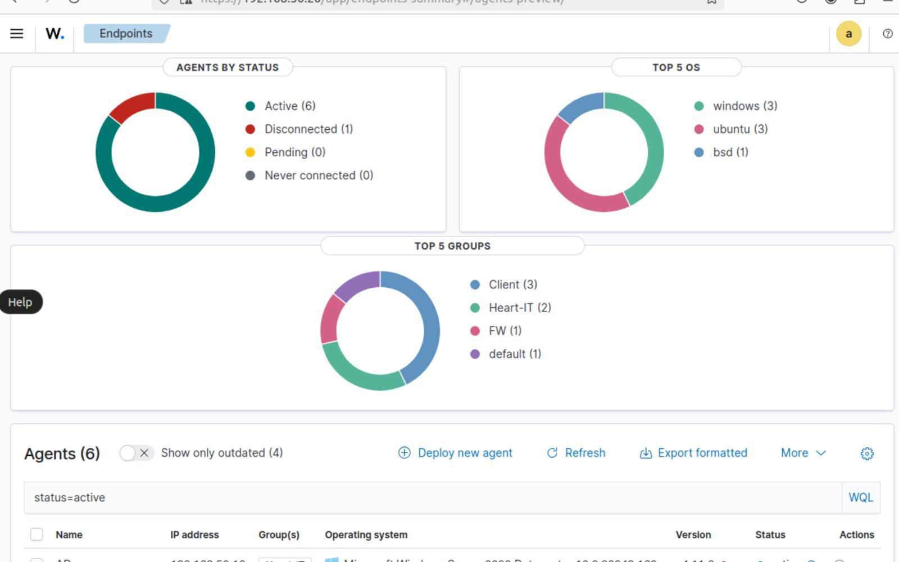
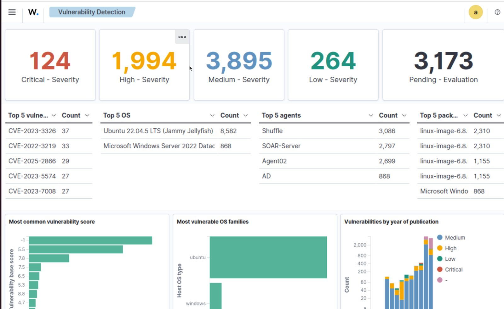
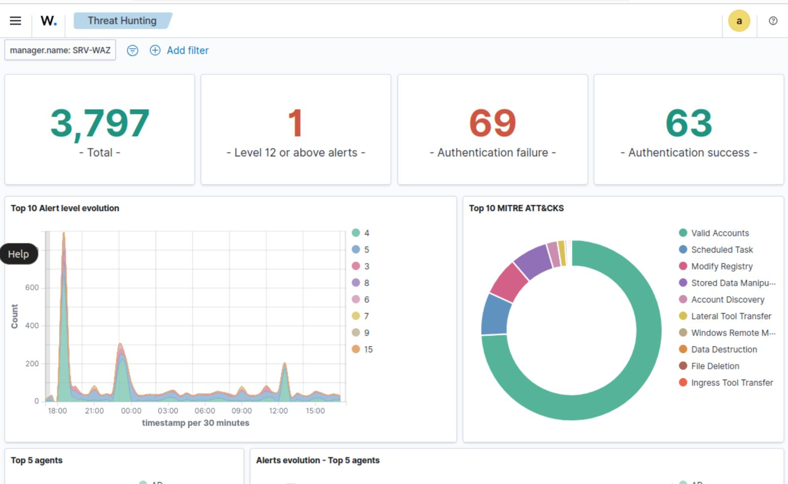
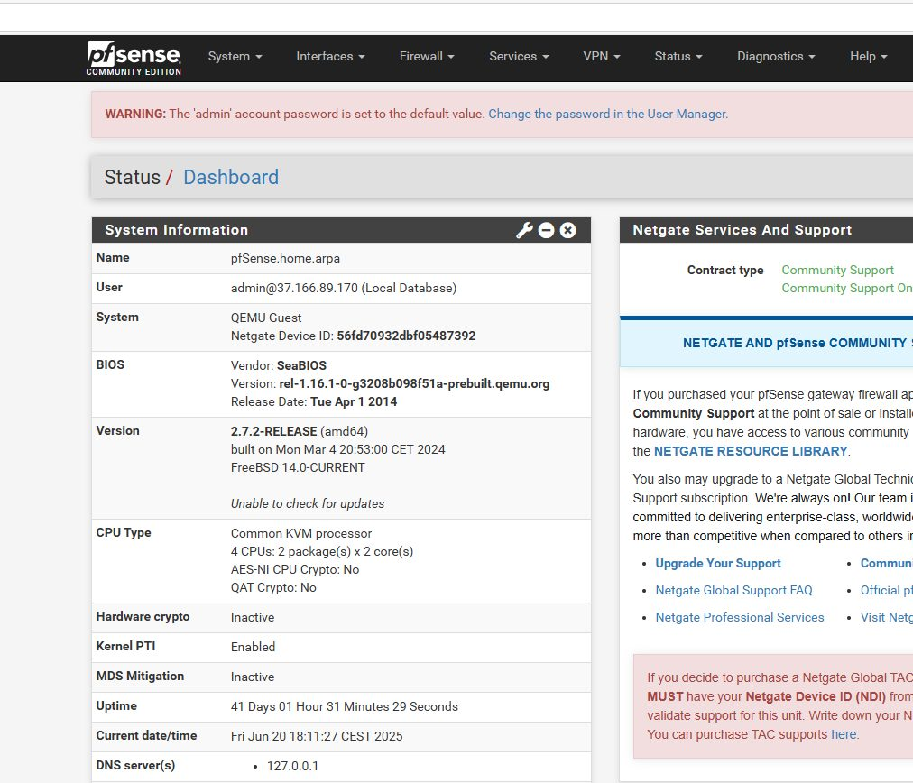
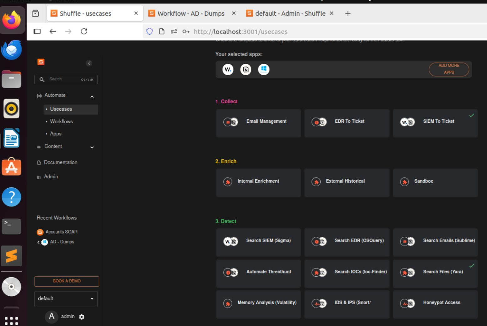
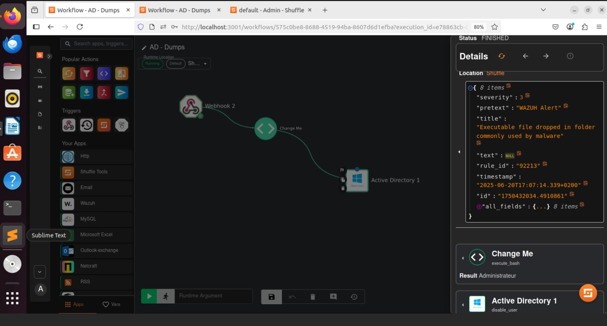
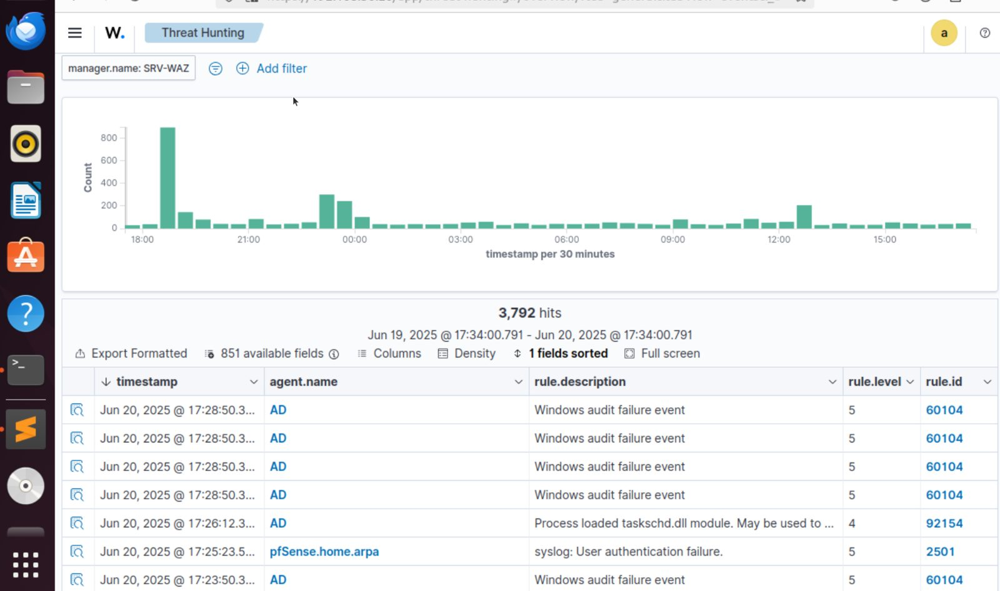

Architecture
Tout tourne sur un hyperviseur Proxmox. Les postes et le contrôleur de domaine envoient leurs journaux à Wazuh, le trafic réseau passe par pfSense et Suricata, et les alertes critiques sont transmises à Shuffle, où sont configurés les playbooks de réponse (blocage côté pare-feu ou action sur le poste concerné).

Étapes du projet
- Définir le périmètre et choisir les outils.
- Installer les serveurs : Proxmox, Wazuh, Shuffle, pfSense avec Suricata, Active Directory.
- Installer les postes Windows 10, Windows 11 et Ubuntu, puis y déployer les agents Wazuh.
- Écrire et ajuster les règles de détection, en les rattachant aux techniques MITRE ATT&CK.
- Construire les playbooks de réponse dans Shuffle.
- Simuler des attaques pour générer des journaux et vérifier que la chaîne détection et réponse fonctionne.
- Documenter l'ensemble et les procédures de remédiation.
Ce qui a été mis en place
Pour être précis sur ce que montre ce projet : tous les composants ont été installés et configurés par moi-même ; les tests ont été menés au moyen d'attaques simulées, dont un scénario de menace interne.
| Composant | Rôle | Installé et configuré | Testé |
|---|---|---|---|
| Proxmox | Hyperviseur du laboratoire | Oui | Sans objet |
| Wazuh et ses agents (Windows 10, Windows 11, Ubuntu) | Collecte, corrélation, détection, tableau de bord | Oui | Oui, alertes générées lors des simulations |
| Règles de détection rattachées à MITRE ATT&CK | Détection | Oui | Oui, lors des simulations |
| pfSense et Suricata | Pare-feu, détection et prévention d'intrusion | Oui | Oui, alertes réseau |
| Active Directory | Domaine et source de journaux | Oui | Comme source de journaux |
| Shuffle | Playbooks de réponse automatisée | Oui | Oui, exécutés lors de la simulation de menace interne |
Limite. Les enregistrements vidéo des simulations n'ont pas été conservés : les captures ci-dessous montrent la configuration et les alertes produites, pas le déroulé complet d'un scénario.
Le SOC en images
Agents connectés à Wazuh. Les postes Windows et Linux remontent leurs journaux en continu.

Détection de vulnérabilités. Wazuh inventorie les logiciels des postes et signale les vulnérabilités connues.

Tableau de bord. Vue d'ensemble des alertes et de leur niveau de gravité.

pfSense et Suricata. Les alertes réseau de l'IDS/IPS.

Shuffle et ses playbooks. Les workflows de réponse configurés pour traiter les alertes critiques.


Suivi des incidents. Les événements détectés par Wazuh pendant les simulations.

Projet personnel de Loïc Wilfried Yamga. Retour au portfolio